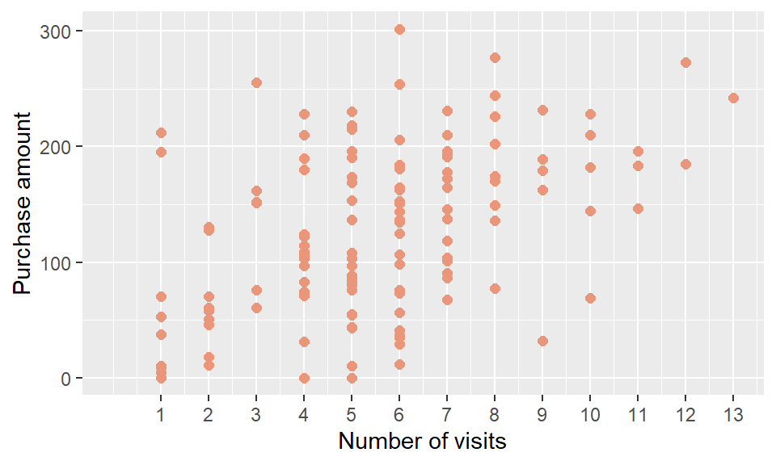
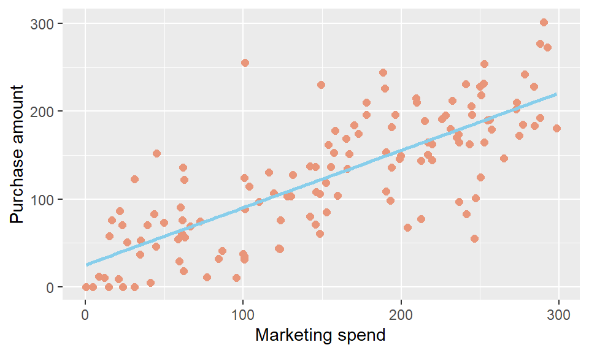
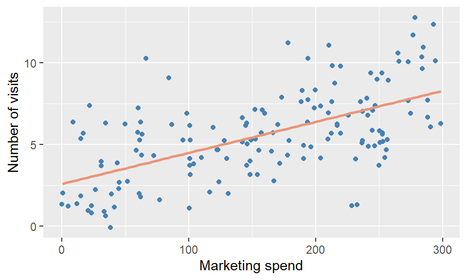
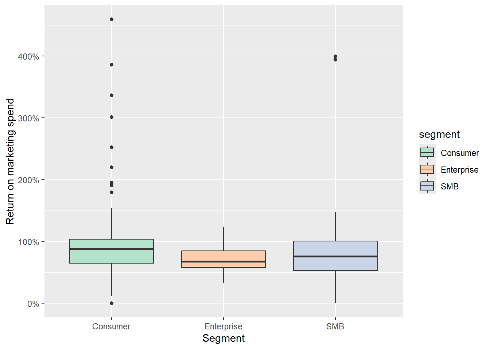

Assignment 1 Creating Reproducible Report
Introduction
During the last quarter, our company ran a personalised marketing campaign for each individual customer, encompassing ads, emails, and coupons with varying expenses across customers. As the Head of Marketing, understanding whether higher marketing spend leads to higher purchase amounts is essential for planning future campaigns. Therefore, examining the relationship between personalised marketing spend and purchase amount using the campaign data as our primary record will be key to shaping our next marketing initiative.
Research Question
To better understand the relationship between personalised marketing spend and purchase amount, this report investigates not only the monetary outcomes of the campaign but also customer behaviour, including site visits and responses to the campaign. Specifically, the key research question is: does higher marketing spend per customer lead to higher purchase amounts? Site traffic and customer responses will also be explored as supporting factors to provide a more complete picture of the campaign’s effectiveness.
Dataset Introduction
The dataset is loaded and stored as marketing_data using the read_csv() function, recording marketing spend per customer alongside campaign results including purchase amount, site traffic, and customer responses. Once loaded, the dataset was cleaned to ensure accuracy and consistency. First, the signup_date variable was converted from a string to a date format using mutate() and parse_date_time(). The unique() function was then used to check the segment and notes columns for capitalisation inconsistencies. Finally, the notes column was found to contain both “N/A” strings and actual missing values, so na_if() was used to convert all “N/A” strings into proper NA values.
Dataset description
The dataset has 150 observations and 7 variables. Each observation records data about each individaul customer. The variables and variable types are;
- customer_id records the identification number assigned to each customer. The variable type is character string.
- signup_date records the date on which the customer signed up with the company. The variable type is date.
- marketing_spend records the amount of marketing expenses spent on each customer. The variable type is numeric.
- visits records the number of times each customer visited the website. The variable type is numeric.
- purchase_amount records the amount spent by each customer. The variable type is numeric.
- segments records the segment of each customer, which can be SMB, Consumer, or Enterprise. The variable type is character string.
- notes records whether or not the customer was contacted and their response toward the campaign. The variable type is character string.
Summary of data - number of visits and purchase amount
The plot above presents the relationship between purchase amount and the number of site visits. Interestingly, the highest purchase amount is associated with 6 visits rather than the highest number of visits, which is 13, suggesting that more site visits do not necessarily lead to higher purchase amounts. This indicates that the relationship between site visits and purchase amount may not be straightforward. Additionally, there are visits that resulted in no purchase, suggesting that not every visit will translate into revenue for the company.
Summary of data - Return on marketing spend
| Segment | Average purchase amount | Average marketing spend | Return on Marketing Spend | Count of Customer |
|---|---|---|---|---|
| SMB | 116.17 | 157.81 | 0.91 | 50 |
| Consumer | 129.51 | 153.99 | 0.99 | 93 |
| Enterprise | 140.01 | 205.78 | 0.73 | 7 |
The table presents the average purchase amount, average marketing spend, and Return on Marketing Spend (ROMS) per customer segment. ROMS greater than 1 indicates that revenue exceeds marketing spend, however none of the segments achieved this.
Results

The plot above presents the relationship between marketing spend and purchase amount. The linear regression model suggests a positive relationship, where higher marketing spend is associated with higher purchase amounts. The model has an R-squared of 0.6, indicating that approximately 60 % of the variation in purchase amount can be explained by marketing spend.

Furthermore, this plot presents the relationship between marketing spend and the number of site visits, examining whether higher marketing spend results in greater website traffic. The model has an R-squared of 0.36 indicating that approximately 36 % of the variation in site visits can be explained by marketing spend.

The plot above further elaborates on Table 1, focusing on the return on marketing spend at the individual customer level. The return variable represents the ratio of purchase amount to marketing spend for each customer. A return value greater than 100% indicates that the customer’s purchase amount exceeds the marketing spend invested in them, meaning the campaign generated a positive return for that customer.
The final result to answer the question in Section 2: does higher marketing spend per customer lead to higher purchase amounts?. From Figure 2, approximately 60 % of the variation in purchase amount can be directly explained by marketing spend. This falls within a moderate range, suggesting that while there is a connection between the two variables, it is not particularly strong. Therefore, while higher marketing spend may lead to higher purchase amounts, other factors outside of marketing spend should also be taken into consideration, such as product positioning and competitor activity, which may account for the remaining variation in purchase amount.
Additionally, Figure 3 examines the relationship between marketing spend and the number of site visits, as it is expected that customers who interact with the company’s ads are more likely to visit the website. However, with only approximately 36 % of the variation in site visits explained by marketing spend, the relationship is relatively weak, suggesting that site visits are not directly driven by marketing spend alone.
While answering the research question is important, the findings alone are not sufficient to develop a better marketing campaign without further analysis. Table 1 and Figure 4 provide additional insight beyond answering the question, helping to shape the future direction of the company’s marketing strategy. An important consideration is: is the increase in purchase amount enough to cover the marketing cost? The Return on Marketing Spend (ROMS) column in Table 1 calculates the average revenue generated relative to marketing spend for each customer segment, helping identify whether purchase amounts cover marketing costs. Segmenting by customer type allows the company to identify which segments yield the highest return and prioritise them in future campaigns. Figure 4 further enriches this picture by showing the distribution of ROMS beyond just the average. The Consumer segment has the highest median ROMS with multiple outliers exceeding 200%, while Enterprise has the lowest median and no outliers. SMB’s median is similar to Consumer’s but with fewer outliers. This information suggests that future campaigns should prioritise the Consumer segment, while also investigating the high-return outliers to understand what drove their exceptional returns and whether those personalised marketing campaign can be applied more broadly.
To conclude, higher marketing spend did lead to higher purchase amounts, though the relationship is moderate rather than strong, and other factors should also be considered. Beyond the research question, the return on marketing spend analysis provides additional business insight into whether the campaign was profitable across segments. The personalised strategies applied to customers with exceptionally high return rates should be studied and adapted to improve returns across the broader customer base.